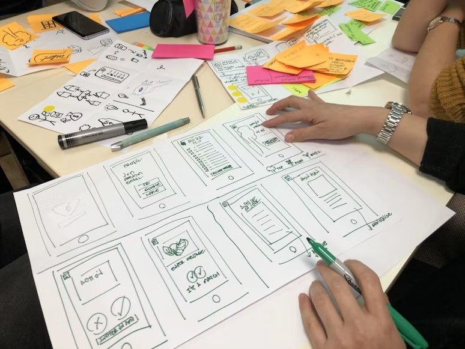
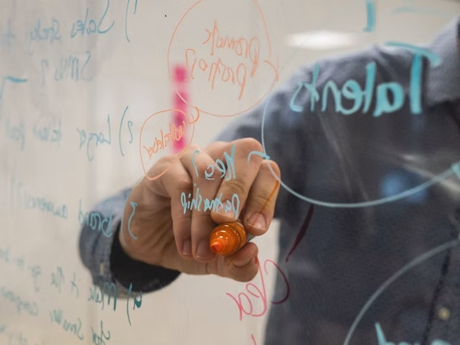

購入者向け追加アップデート
いま実際に使っている、AIへの頼み方24選
いつも教材を活用してくださり、ありがとうございます。
「わかりました」って言ってるのに、全然わかってない。直してほしいと頼んだら、残したかったところまで消えている。
AIを使っていて、「違う違う、そうじゃない」と思うこと、ありますよね。
私は本や記事を書いたり、表紙や画像を作ったり、最近はアプリやゲームも作っています。その中でよく使う頼み方を、24個にまとめました。
難しい決まり文句というより、うまくいかないときに私が何を伝えているか、という話です。どうしてこの一言を使うようになったのかも含めて、お話しします。
全部を順番に使う必要はありません。今、困っていることに合うものを選んで使ってみてください。
見出しの「 」の中は、そのままAIのチャットへ貼って使える依頼文です。先に、AIに頼みたい仕事や確認してほしい文章・画像を渡してください。何を渡すかは、それぞれの本文で説明します。依頼文の「私」は、AIに頼む「あなた」に置き換えて読んでください。
画像やパソコンのファイルを扱う頼み方は、その機能に対応したAIで使ってください。
この記事の目次
- 1．AIに仕事を頼む
- 01「どう理解したか、まず私に説明してください」
- 02「本文はまだ書かず、何をどんな順番で書くか、箇条書きで見せてください」
- 03「この見出しで何を伝えたいのか、一行で説明してください」
- 04「まず作業の順番だけ教えてください。実際の作業は、私の返事を待ってから始めてください」
- 05「この文章をどんな観点で確認するとよくなるか、考えてください。チェックを始める前に、その観点を教えてください」
- 2．AIで文章・画像を作る・直す
- 06「不要なたとえや気取った言い回しを避けて、普段使う自然な日本語で書き直してください」
- 07「この文章の日本語に違和感があります。どこが不自然なのかを考えて、理由と一緒に説明してください」
- 08「初めて読む人が一度で理解できる文章にしたいです。理解しにくいところを探して、理由と一緒に教えてください」
- 09「文章の前後で、話がつながっていないところや矛盾しているところを、理由と一緒に教えてください」
- 10「修正案を『絶対修正・修正検討・修正しない』の3段階に分けて、理由を添えて教えてください」
- 11「私が話したときの感情や生々しさが消えています。元の音声の文字起こしを読み直して、消えてしまった感情や言い回しを文章に戻してください」
- 12「図や画像を入れるとわかりやすくなる場所と、どんな図や画像がよいかを、理由と一緒に提案してください」
- 13「見本の画像と、今作っている画像が、具体的にどこで違っているか説明してください」
- 14「何か違和感があります。まだ書き直さず、文章の問題点と直し方を考えて説明してください」
- 15「同じ言葉や指摘、強調を繰り返しているところを整理してください。必要な説明は残してください」
- 16「まだ本文は直さず、原文・修正案・直す理由を、表にして見せてください」
- 3．作業を進める・ルールを残す
- 17「一つの作業が終わるたびに、結果を見せて私の返事を待ってください」
- 18「まず小さな見本を一つだけ作ってください。残りは、私が確認してから進めてください」
- 19「確認→修正→修正後の再確認を1セットとして、このセットは合計2回までにしてください。そこでいったん止めて、できているものと、まだ解決していない問題を見せてください」
- 20「いったん作業を止めてください。うまく進まなかった原因と、同じことを繰り返さないために変えることを説明してください」
- 21「今回のやり取りで何度も伝えた希望を、次回も使えるルールにまとめて提案してください」
- 22「指定した範囲にあるルールを読み、重複や矛盾があれば教えてください。まだ書き換えないでください」
- 23「指定したフォルダの中を確認し、『削除できそう・削除を検討・残す』の3段階に分けて、理由と一緒に提案してください。まだ削除しないでください」
- 24「次のチャットで続きを頼めるように、決まったことと残りの作業をまとめてください」
- 最後に。まずは一つ、使ってみてください
1．AIに仕事を頼む

まずは、AIにどう仕事を進めてもらうかを確認する5個です。頼んだ内容の理解や作業の順番を確かめるほか、文章を書いている途中や、書き終えたあとに確認する頼み方もあります。
01「どう理解したか、まず私に説明してください」
「わかりました」って言ってるのに、AIがわかってないときって、めっちゃあるんですよね。
「いやいや、お前わかってへんやんけ」
そんなツッコミをしたこと、皆さんもないでしょうか。私は100回くらいあります。
なので、仕事をお願いするときに、「どう理解したか、まず私に説明してください」と一緒に伝えます。
例えば、AIの使い方を説明する本を作るとします。「初めてAIを使う人向けに、質問を入力して返事を読むところから、難しい言葉を使わずに説明したい」と書いて、そのあとに「どう理解したか、まず私に説明してください」と添えて、AIに送ります。
そこで「すでにAIを使っている人に、もっと上手な頼み方を教える本ですね」と返ってきたら、「いや、まだ一度も使ったことがない人向けです。最初の質問を入力するところから説明してください」と伝え直します。
こうして、AIが誰に何を説明するつもりなのかを確かめてから、本文を書いてもらうわけです。
これで100％防げるわけではないんですけど、この一回を挟むだけで、「お前わかってへんやんけ」とツッコむ機会は、私の体感では結構減っています。
02「本文はまだ書かず、何をどんな順番で書くか、箇条書きで見せてください」
これは最近、かなり使っています。
私は基本的にAIを使って文章を書くんですけど、「書いてください」と任せると、同じような主張を何回も繰り返すことがあるんですよね。なぜか何度も同じことを言う。これはもう本当に不思議で仕方がないが、直らない。
なので、いきなり本文を書いてもらわず、まずは文章の流れを箇条書きで見せてもらいます。テーマと入れたい内容を伝えて、この一言を添えます。
AIが出してきた箇条書きを読んで、同じ内容が何度も出てきたら、本文を書いてもらう前に「これ、さっきも同じようなこと言ってるよね」とツッコめるんです。
AIの仕組みは私もいまいちよくわからないんですけど、一度完成した文章をあとから修正するのって、えらい手間がかかることがあって。
本なら、まずAIに章の並びを提案してもらって、私が確認する。次に、その中の節を提案してもらって、また確認する。節というのは「1-1」「1-2」のような、一つの章の中の区切りです。そのあとで、それぞれの節に何を書くかをAIに箇条書きで見せてもらいます。
こうやって少しずつ細かくして、流れを確認してから本文をお願いする。私の場合は、この進め方だとうまく書けることが多いです。
03「この見出しで何を伝えたいのか、一行で説明してください」
さっきのように、ちゃんと箇条書きから作っても、うまくいかないことがあります。
何回書き直しても、なんか違う。そういうときに使うのが、この一言です。
うまくいっていない節や見出しと、その本文をAIに見せて、「そもそも、ここで何を伝えたいんでしたっけ」と確認し直します。
これは執筆を始める前の確認というより、書いている途中で、一度立ち止まるための言葉ですね。
「この見出しで何を伝えたいのか、一行で説明してください」
一行にしてもらうと、AIが何を伝えようとしていたのかを確認できます。そこで自分の意図と違っていたら、「ここで伝えたいのは、こっちです」と戻す。
何を伝える節なのかがはっきりすると、そのあとの文章も直しやすくなります。何回書いても、うまくいかないな、というときに便利です。
04「まず作業の順番だけ教えてください。実際の作業は、私の返事を待ってから始めてください」
これは、かなり大事です。最近、本当によく使っています。
私が使っているAIのClaudeやCodex、賢いんですよね。とっても賢い。お二方とも、とても賢いでございます。
お願いすると、果てしなく最後まで作業を進めてくれることがあります。それはいいんですけど、果てしなく進めた挙げ句、作業の方向を間違っていることもあるんです。
そのときに漂う絶望感って、半端なくて。
良かれと思って、どんどん進めてくれているんでしょうけど。いや、まず今から何をやろうとしているか、説明してもらっていいかな、と。
なので、頼みたい仕事を伝えるときに、この一言も一緒に送ります。作業を始める前に、順番だけ教えてもらうわけです。
例えば、記事を書いてもらうなら、「先に見出しを決めて、そのあとで本文を書きます」といった順番を出してもらう。もし資料の確認から始めてほしいなら、「まず、渡した資料を読んでください」と伝え直します。
出てきた順番でよければ、「その順番で進めてください」とお願いするわけです。
私の感覚なんですけど、ポンと依頼するよりも、一度説明してもらってから進めた方が、ズレが減る気がしています。
こちらがツッコめるのも大きいんですが、ツッコまなかったとしても、一度これからやることを考えてもらう。そのステップ自体を挟むと、AIが賢くなる・ミスが減る気がしていて、このステップそのものが大事な気がするんですよね。（あおい調べです）
私はこの頼み方をかなり使っていて、作業も進めやすくなっていると感じています。
05「この文章をどんな観点で確認するとよくなるか、考えてください。チェックを始める前に、その観点を教えてください」
AIで文章を書いたあと、最後にもう一度、AIに見直してもらうこともありますよね。
「正しい文章か見直してください」でもいいんですけど、それだけだともったいないな、と私は思っています。
まず、「何を確認するつもりなのか」を教えてもらうんです。誤字なのか、初心者への説明なのか、前後のつながりなのか。そういう、文章を見るときの観点ですね。
昔は、私から事細かに確認の観点を伝えていたんですよ。「ここを見て、これも見て」と。
なんですけど、最近はその観点もAIに考えてもらっています。
文章と、誰に読んでもらいたいかを渡して、「この文章をどういう観点で確認すると、読者にとってよくなりそうか、まずあなたが考えてください」と頼む。そのうえで、チェックする前に見せてもらいます。
自分が気にしていたことが抜けていたら足してもらうし、納得できればその観点で確認をお願いする。
私の感触では、いきなり「見直してください」と頼むよりも、確認してほしいことに合ったチェックをしてもらいやすいです。
2．AIで文章・画像を作る・直す
ここからは、文章や画像を見て「なんか違う」と思ったときや、もう少しよくしたいときに使う11個です。
06「不要なたとえや気取った言い回しを避けて、普段使う自然な日本語で書き直してください」
AIで作った文章って、よくわからない謎の比喩とか、謎の言い回しが出てくることがあるんですよね。
お前なんでそんな変な例え話とか、比喩入れてくんねん、と。普通でええねん、普通で、と。
AIで文章を書いている方なら、わかるでしょうか。なんか知らんけど、回りくどい。
間違っているわけではない。でも、とにかく回りくどいことだけはわかる。自分だったら、そんな言い方はしない。
そういうときは、気になる文章をAIに見せて、この一言を使います。
「自然にしてください」だけだと、どんなふうに直してほしいか伝わりにくいので、不要なたとえや気取った言い回しを避けて、普段使う日本語で、と伝えるわけです。例えば、「学びの旅に一歩を踏み出しましょう」を「勉強を始めましょう」にする、といった感じです。（学びの旅に一歩を踏み出すって何やねん、と）
これで結構、直ることがあります。書き直された文章を読んで、元の意味が変わっていないか、自分の言葉として違和感がないかを見てみてください。
07「この文章の日本語に違和感があります。どこが不自然なのかを考えて、理由と一緒に説明してください」
文章を読んで「なんか不自然だな」と思っても、どこが気になるのか、自分でうまく説明できない。そういうときに、まずAIに気になるところを探してもらう頼み方です。
気になる文章を渡して、「ここが不自然です」「ここも不自然です」と一つずつ指摘していくのもいいんですけど、AI自身に探してもらうこともできます。
「なんか不自然な気がするよ。あなたも自分で考えられると思うから、考えてみて」
そんな感じです。
私が使っているAIだと、こちらが全部言わなくても、「この言い回しが不自然です」と、自分で気になるところを見つけてくれることがあります。
このときは、場所だけでなく理由も説明してもらうんです。何を不自然と判断したのかがわかれば、「そう、そこが気になっていた」と確認できますし、「そこは自分の言い方なので残したい」とも言えます。
まず説明を読んで、納得できたところから修正をお願いすれば大丈夫です。
08「初めて読む人が一度で理解できる文章にしたいです。理解しにくいところを探して、理由と一緒に教えてください」
私は初心者の方に向けた本を書くことが多いので、この頼み方もよく使います。
自分ではわかっているつもりでも、初めて読む人には伝わらないところがあるんですよね。
文章と、どんな人に読んでもらいたいかをAIに伝えてから、「初めて読む人が一度で理解できるようにしたいです。そうなっていないところを探してください」と頼みます。
例えば、説明していない略語をいきなり使っていたり、操作の途中を省いていたり。書いている側には当たり前でも、読む側にはわからないかもしれません。（ワタクシも、最近ほんとにこれ気をつけないとダメだなぁと思ってます。自戒を込めて。）
ここでも、「この箇所です」だけで終わらず、なぜ初めて読む人には理解しにくいと考えたのか、理由まで聞きます。
理由を見れば、用語の説明を足せばいいのか、手順を一つ戻って説明した方がいいのかを考えられます。気になった箇所だけでなく、理由を一緒にもらう。私はこの形でよくお願いしています。
09「文章の前後で、話がつながっていないところや矛盾しているところを、理由と一緒に教えてください」
AIが作った文章って、ぶつ切りになることがあるんですよね。
言っていることは正しい。でも、急に違う話になる。
一文ずつ読んでいるとそこまで変ではないのに、続けて読むと「あれ？」となる。そういうときに使います。
前後のつながりを見てほしいので、気になった一文だけでなく、確認してほしい文章の全体をAIに渡してください。
そのうえで、話がつながらないところや、矛盾しているところと、その理由を教えてもらいます。
場所だけ教えてもらうよりも、「なぜそこだと考えたのか」まで聞くと、とってもいい。かなり使えると思っています。
10「修正案を『絶対修正・修正検討・修正しない』の3段階に分けて、理由を添えて教えてください」
文章の精度をもう少し上げたいときに使います。
AIって、「修正点を挙げてください」と言うと、いつまでも修正点を挙げてくることがあるんですよね。そして、いつまでも修正が終わらない。まさにエンドレス。
なので、文章を見直してもらうときに、元の文章を渡して、この一言を添えます。修正案を出してもらうときに、その修正がどれくらい必要なのかも、3段階に分けて教えてもらうんです。
「絶対修正」は、誤字や、明らかに文脈がおかしいところ。「修正検討」は、直した方がよくなるか考えたいところ。「修正しない」は、変える必要がないと考えるところです。それぞれ、理由も添えてもらいます。
私は「絶対修正」と「修正検討」を、基本的には反映することが多いですかね。
一方で、「もう、もはやこれ好みの問題やろ」とか、「いや、そこは個性やね」というものもあります。そういうところは、修正しない。
全部を同じ重さで受け取らず、どれを直すか分けて考えるために使っています。もちろん、AIの分類を見て、最後に採用するか決めるのは自分です。
11「私が話したときの感情や生々しさが消えています。元の音声の文字起こしを読み直して、消えてしまった感情や言い回しを文章に戻してください」
私は、音声でしゃべったものをAIに整えてもらって、文章を書くことがほとんどです。実は、この24個の説明も、音声でしゃべったものをもとにしています。
なんですけど、めっちゃ生々しくしゃべったのに、文章になると、めちゃめちゃ整いすぎていることがあるんですよね。
感情も、途中のツッコミも、なんか消えている。きれいな文章にはなったけど、私がしゃべっていた感じと違う。
そういうときは、整えてもらった文章と、元の音声を文字にしたものを両方渡して、この一言を使います。
「いや、もう一回、元のデータまで戻ってやり直してこい」
ということですね。
これは、上手な言い方というより、私がよくやっている作業です。整えた文章だけを直してもらうのではなく、元の音声で何を言っていたのか、どんな言い方をしていたのかに戻る。
そこから、消えてしまった感情や生々しさを戻してもらいます。新しく感情を足すのではなく、私が実際にしゃべっていたものを、もう一度拾ってもらうんです。
12「図や画像を入れるとわかりやすくなる場所と、どんな図や画像がよいかを、理由と一緒に提案してください」
本や記事に挿絵を入れるとき、「そもそも、どこに入れるといいのか」も、AIに考えてもらっています。
私は基本的に節の最後へ挿絵を入れるようにしているんですけど、別に、節の最後でなければダメというわけではありません。
本文を渡して、「ここに図や画像があると、もっとわかりやすくなりそう」という場所を探してもらう。これも、結構いい提案をしてくれます。
そのときは、場所だけでなく、どんな図や画像を入れるのかと、その理由も一緒にお願いするといいです。
文章だけだと想像しにくい完成形を見せるのか、手順を図にするのか。何を見せたい画像なのかまで提案してもらいます。
そこまで決まっていれば、あとで実際に挿絵を作るときにも、その説明を使えます。提案を読んで、採用したい場所と内容を選んでから、画像の制作へ進めばいいわけです。
13「見本の画像と、今作っている画像が、具体的にどこで違っているか説明してください」
挿絵や表紙を作るとき、参考にしたい画像があることってありますよね。私の場合は、表紙でよくあります。
シリーズものだったら、表紙の雰囲気をそろえたいじゃないですか。
なんだけど、急に謎のオリジナリティを発揮して、全然違うトーンの表紙をお作りになることが、AIさんには時々ございます。
「いやいや、なんでやねん。シリーズものやって言ってるのに」
そこで「前の表紙と同じような表紙を作って」とお願いするんですけど、これがドツボの入口でございまして。
「はい、かしこまりました。私が間違っておりました」みたいな返事をしながら、また全然トーンが違う表紙を作ってくる。これが続くと、猛烈にストレスがたまります。私は普通にガチギレします。
なので、すぐ次の画像を作ってもらう前に、見本と今の画像を両方渡して、どちらが見本なのかも伝えます。
そして、「この二つは、具体的にどこが違っているのか」を説明してもらうんです。
色なのか、文字の大きさなのか、配置なのか。まず違いをAIに言葉にしてもらう。それを読んで、自分が気にしていた違いと合っていれば、そこを直してもらいます。
文章だけでなく、画像を作るときも、先に課題を言葉にしてもらうと、直してほしいところが伝わりやすくなります。
14「何か違和感があります。まだ書き直さず、文章の問題点と直し方を考えて説明してください」
ここまで、似たような頼み方をいくつかご紹介してきましたが、これはもう少し広く、AIに考えてもらう言い方です。
「なんか違うんだけど、何が違うかよくわからん」
そういうときに、原稿を見せて、問題を探すところからお願いすることがあります。結構、無茶ぶりです。
メンバーが頑張って資料を作って持ってきた。頑張ったのはわかる。でも、なんか違う。「ちょっともう一回、自分で考えてみて」だけで返す、みたいな感じ。
ちなみに実際の職場でチームメンバーにこれやったら、光の速さでメンバーの心は離れていくので、ご注意ください。（でも昔は上司によくやられたけどなぁ〜。時代は変わりましたね。）
私はAIとのやり取りでは、この頼み方も結構使っています。以前は難しいと感じていたのに、最近は、こういう広い聞き方でも、自分で課題を考えて提案してくれることがあるんです。
ただ、何が違うのかがまだ決まっていないので、いきなり書き直してもらわず、問題点と直し方の説明を先にもらいます。
不自然な日本語なのか、説明が足りないのか、そもそも伝えたいことが違うのか。自分でも言葉にできていないときは、出てきた説明を見ながら考えてみるといいと思います。
15「同じ言葉や指摘、強調を繰り返しているところを整理してください。必要な説明は残してください」
AIの文章を読んでいると、なぜか同じ言葉を連呼し始めることがあります。
同じような指摘とか、同じような強調とか。突然「正直に言うと」を何度も言い始めたりするんですよね。（もう正直なんわかったから、と。）
一回ならいいんですけど、繰り返されると気になります。
そういうときは、前後を含めた文章を見せて、同じ言葉や指摘が続いているところを整理してもらいます。
注意書きの繰り返しにも使えますが、それだけではありません。言葉を強調しすぎていたり、同じことを言い方だけ変えて何度も説明していたりするときにも使います。
必要な説明まで消したいわけではないので、そこは残してもらう。書き直されたものを読んで、言いたいことが一度できちんと伝わるかを確かめます。
16「まだ本文は直さず、原文・修正案・直す理由を、表にして見せてください」
文章がある程度できて、完成に近づいてきたら、私はこの頼み方をよく使います。
いきなり「修正してください」と頼むと、変な直し方をしたり、直しすぎたりすることがあるんですよね。
5,000字の文章を修正してもらったら、2,000字になっていた。私は、こういうこともよくあります。いや、削りすぎやろ、と。
なので、直してほしい文章と気になっていることを伝えたら、まず原文と修正案を表にして見せてもらう。理由も一緒にもらいます。
元の文章と修正案が横に並んでいれば、どこをどう変えるつもりなのかがわかります。理由を読めば、なぜそこを直そうとしているかもわかる。
「そこは残したい」「この修正はいい」と確認してから、納得したものだけ反映してもらいます。
一番ドツボにはまるのが、「修正してください」で出てきた文章に「これが違います」と言うと、また微妙に違う文章が出てくるパターンです。
それでまた修正をお願いして、また微妙に違う。
もう、AIで文章を書いていて、ウキーってなるので。
そうなる前に、一度、表で見せてもらう。私の場合は、結構生産性上がってるなと思います。
3．作業を進める・ルールを残す

最後は、任せる作業を少しずつ増やしたり、次の仕事へ引き継いだりするときに使う8個です。
17「一つの作業が終わるたびに、結果を見せて私の返事を待ってください」
最近、私が使っているAIは、自分で考えて、最後まで一気に作業を進めてくれることがあります。
でも、最初から全部任せるより、一つずつ確認した方がいいな、と思うことも多いんです。
やり直しを減らして、AIを使う量も抑えたい。そんなときは、まず「一つの作業」がどこまでなのかを決めます。本なら一節ずつ、というように区切ってから、この言葉を伝えます。
一つ終わったら結果を見て、「ここが違うので、次はこれに気をつけてください」と返す。また一つお願いして、また気になったところを伝える。
そうやって、「ほぼ自分の思っているとおりにできるようになってきたな」と思ったら、「では、残りの作業を一気に進めてください」と任せる範囲を広げます。
なんか、本当に人間と同じですよね。新人や、自分の下についているメンバーと同じで、最初から全部任せるのではなく、少しずつ仕事をお願いして、少しずつフィードバックする。
合ってきたら、一気にドカンと任せる。
この進め方が、私はとてもいいと思っています。
18「まず小さな見本を一つだけ作ってください。残りは、私が確認してから進めてください」
これは、一つ前と似ていますが、最初に小さな試作品を作ってもらう頼み方です。
文章でも、表紙でも、画像でも使います。最近、私はゲームも結構作っているんですけど、ゲームでも同じです。アプリやWebアプリを作るときにも使っています。
作りたいものと条件を伝えたら、最初から全部を作ってもらうのではなく、ものすごく小さい単位で、まず一つだけ作ってもらいます。
例えば、挿絵なら一枚。ゲームなら「ボタンを押すとキャラクターがジャンプするところだけ作ってください」と頼む、といった具合です。まず試したい動きを一つに絞って、どこまで作ってほしいかも先に伝えます。
できた見本を見て、違うところを伝える。それが合ってきたら、少しずつ作る範囲を大きくしていく。最後に、一気にドーンとお願いする。
一つ前は、進行中の仕事をどこで区切って確認するか、という話。こちらは、作りたいものの見本を最初に一つ作る、という話です。
微妙に似ていますけど、使う場面が違うので、あえて両方載せています。
19「確認→修正→修正後の再確認を1セットとして、このセットは合計2回までにしてください。そこでいったん止めて、できているものと、まだ解決していない問題を見せてください」
これも大事です。
複数のAIに確認してもらったり、サブエージェントを使ったりすることがあります。サブエージェントというのは、主担当とは別に仕事を分担してもらうAIのことです。
確認をお願いできるのは便利なんですけど、いつまでも検証していることがあるんですよ。
「あれ、いつまでたっても、この作業終わらんな。そんな難しいことお願いしたつもりないんやけどな」
そう思って様子を見に行くと、複数のAI同士で延々と議論している。
何も決まらない、眠い、夜遅い時間の会議みたいなことをやっているわけです。はい、私もよくやっていましたね、そういう会議。
AIには「トークン」という、文章などの処理量を数える単位があります。私としては、そこに使う量ばかり増えて、大したものが出てこないのはつらい。絶望的。
なので、確認や修正を続けてお願いする前に、何回まで試してもらうかを決めておきます。見出しは2回の例なので、回数は依頼に合わせて変えてください。
決めた回数になったら、その時点でできているものを出してもらう。そして、解決できなかったことは、未解決の課題として教えてもらいます。
その一覧を見て、追加で直すか、今の内容でよいかを自分で決める。
AIに自分で考えて自走して進めてもらう頼み方は便利なんですけど、回数を区切っておかないと、夜10時以降の生産性の低い会議みたいになることがあるので。私は、先に終わるタイミングも決めるようにしています。
20「いったん作業を止めてください。うまく進まなかった原因と、同じことを繰り返さないために変えることを説明してください」
AIは何かを依頼したとき「失敗しました」「うまくいきませんでした」と言いながら、延々と作業していることがあります。
そういうときは、「お前、ちょっと何やってんねん」と止めるんです。
止めたうえで、まず、なぜうまくいかなかったのかを説明してもらいます。別のチャットで相談するなら、頼んだ内容、AIの返答、どこが期待と違ったかも一緒に渡してください。
これ、とても大事だと思っています。
トラブルが起きたときに、まず原因を把握して、再発防止策を考える。会社で働いていると、よくある話じゃないですか。それとかなり似ている気がします。
同じ依頼を何度も繰り返す前に、何がうまくいっていないのかを確認する。依頼の説明が足りなかったのか、一度に任せたことが多すぎたのか。それとも、別の理由なのか。
AIが出した説明は、実際のやり取りと照らして読んでください。原因の推測まで、確認済みの事実として受け取る必要はありません。
次に何を変えるかまで決めてから、作業を再開します。
21「今回のやり取りで何度も伝えた希望を、次回も使えるルールにまとめて提案してください」
本を一冊書いた。動画を一つ作った。アプリやゲームを一つ作った。
そういう一仕事が終わって、そのチャットを閉じる前に、私はこれを使います。
何回もお願いしたことって、次からはルールにできるんですよね。
「難しい言葉は説明して」「感想を消さないで」と何度も伝えたなら、次の仕事でも先に渡せる形にしておく。そのために、今回のやり取りの中でルールにできることを、まずAIに提案してもらいます。
内容を見て、自分の希望に合っているかを確認する。次の仕事でも使いたいものを保存して、次に頼むときの最初にAIへ渡します。
これを丁寧にやればやるほど、AIが自分好みに仕上がっていく感じがあります。
AIが勝手に全部覚えてくれるという意味ではなく、自分が何を大事にしているかを、次の仕事でも伝えられるようにしておくということですね。
毎回同じことを言っているな、と思うなら、一仕事が終わったときに使ってみるといいんじゃないかなと思います。
AIそのものにもこの機能はありますが、どうにも、正しく発動しないことが多いなと思っていて。
なので私はローカルにmdファイルを作ってそこにルールを蓄積しています。
22「指定した範囲にあるルールを読み、重複や矛盾があれば教えてください。まだ書き換えないでください」
これは、一つ前と逆の話に聞こえるかもしれません。
ルールを足すと、自分の希望を伝えやすくなります。でも、足しすぎると、今度はルール同士がぶつかることがあるんですよね。
しかも、自分では、どこに何のルールを作ったか、もはや把握しきれていない。いつの間にか矛盾していることがあります。
なので、私は時々、今使っているルールの状態を確認してもらうんです。
私が使っているAIは、一定の期間ごとに使える量が決まっています。週末に、「もうすぐその上限がリセットされるけど、まだ使える分が残っているな」というときにお願いすることもあります。
チャットで頼むなら、確認したいルールをまとめて渡してください。パソコン上のファイルを読めるAIに頼むなら、確認してよいフォルダと、触ってはいけない範囲を先に指定します。
そのうえで、まず現状を読んで、重複や矛盾を教えてもらう。まだ書き換えてもらう段階ではありません。
例えば、同じ場面について「全部箇条書きにする」と「箇条書きは使わない」が両方あれば、そのままでは困ります。（矛盾したルールは、AIの処理速度が遅くなる、精度が落ちる原因になる可能性があります。）どちらを優先するのか、場面によって使い分けるのかを、提案を見て決めます。
感覚としては、パソコンの掃除に近いですかね。増やしっぱなしにせず、時々整理する。私はこれも結構やっています。
23「指定したフォルダの中を確認し、『削除できそう・削除を検討・残す』の3段階に分けて、理由と一緒に提案してください。まだ削除しないでください」
動画を作ったり、本を書いたり、画像を作ったりしていると、とにかくデータがたまっていきます。
私のパソコン、まだそんなにすごいものを使えていないので、すぐパンパンになるんですよ。保存できる容量が埋まってしまう。
パソコンがフリーズしたり、いきなりブチンとAIのアプリが落ちたりすることもあって、もう買い替えようかな、とも考えています。
ただ、データを保存する容量と、アプリが作業に使うメモリは別です。ファイルを消せばフリーズが直る、という話ではありません。ここで頼むのは、保存しているデータの整理です。
私は定期的に、指定したフォルダの中で、もう使わないデータの候補を出してもらっています。整理する量が1GBくらいになることもあります。
これは、パソコンのファイルを確認できるAIに頼む使い方です。対象のフォルダと、残したい完成版や原本を先に伝えてから、この依頼文を使います。確認できないファイルは、削除候補と決めつけず、「わからない」と報告してもらってください。
ここでも、3段階に分けてもらいます。
「削除できそう」は、もう使わないと考える理由がはっきりしているもの。「削除を検討」は、まだ使うかもしれず、自分に確認してほしいもの。「残す」は、完成版や原本など、取っておくものです。それぞれ、ファイル名と理由を出してもらう。AIに「絶対安全」と保証してもらうのではなく、自分が確認するための候補です。
実際に消すかどうかは、その一覧を見て決めます。消すと決めたものも、いきなり完全に削除するより、まずは戻せるゴミ箱へ移すように頼むと確認しやすいです。
お使いのパソコンにもよると思いますが、私の場合はデータが結構たまるので、定期的に整理しています。
24「次のチャットで続きを頼めるように、決まったことと残りの作業をまとめてください」
最後は、チャットの引っ越しです。
私は、AIに使う量をできるだけ抑えたいと思っていて、ある程度やり取りがたまったら、新しいチャットへ移るようにしています。
やり取りが増えると、以前の相談や途中の案まで、同じチャットにたまっていきます。なので私は、続きに必要なことをまとめて、新しいチャットへ移るようにしています。
引っ越すとき、今のチャットを閉じる前に頼むのが、この一言です。
すでに決まったことと、次にやることをまとめてもらう。それを自分で確認してから、新しいチャットの最初に渡します。
続きに必要な原稿や画像、ルールも、まとめとは別に渡してください。新しいチャットで読める状態にしておかないと、続きの仕事をお願いできません。
何をどこまで引き継ぎたいかは、その仕事によっても違います。全部持っていきたいのか、今決まっていることと残りの仕事だけでいいのか。そこは、自分が何を残したいかを考えて、まとめを確認するといいと思います。
これは、この言葉そのものが大事というより、必要なことを整理して、次のチャットへ引き継ぐ作業が大事、というふうに受け取ってもらえたらと思います。
最後に。まずは一つ、使ってみてください
ここまで読んでくださって、ありがとうございます。
24個ご紹介しましたが、全部を覚えなくても大丈夫です。次にAIを使うとき、「これ、今の自分に使えそうだな」と思った一言から試してみてください。
私も、AIにツッコミを入れながら使っています。一回でうまく伝わらなかったら、もう少し説明する。違うものが返ってきたら、どこが違うか一緒に考える。そうやって、自分に合う頼み方を少しずつ見つけていけたらいいと思っています。
「なんで伝わらへんねん」と困る時間が少し減って、「あ、これが作りたかったんだ」と思えることが増えたら、うれしいです。
本でも、記事でも、画像でも。あなたが作ってみたいものを、AIとやり取りしながら形にする。そのときに、この24個の依頼文が役に立てば幸いです。
まずは、今作りたいものから。ご自身のペースで、楽しみながら取り組んでもらえたらうれしいです。